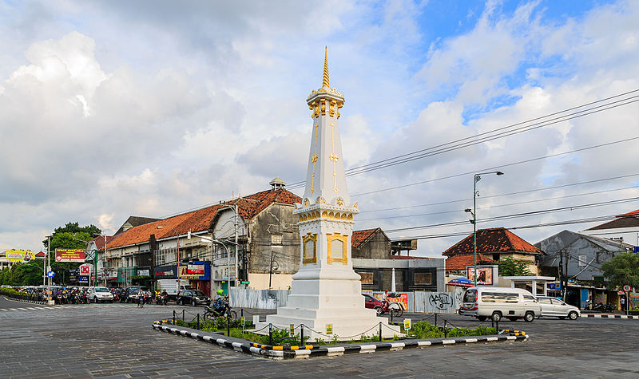

1.bandung
Kota Bandung merupakan kota metropolitan terbesar di Provinsi Jawa Barat, sekaligus menjadi ibu kota provinsi tersebut. Kota ini terletak 140 km sebelah tenggara Jakarta, dan merupakan kota terbesar di wilayah Pulau Jawa bagian selatan. Sedangkan wilayah Bandung Raya (Wilayah Metropolitan Bandung) merupakan metropolitan terbesar kedua di Indonesia setelah Jabodetabek.

2.yogya
Salah satu kecamatan di Yogyakarta, yaitu Kotagede pernah menjadi pusat Kesultanan Mataram antara kurun tahun 1575–1640.Keraton (Istana) yang masih berfungsi dalam arti yang sesungguhnya adalah Keraton Ngayogyakarta dan Puro Paku Alaman, yang merupakan pecahan dari Kesultanan Mataram..

3. surabaya
Kota Surabaya adalah ibu kota Provinsi Jawa Timur, Indonesia, sekaligus kota metropolitan terbesar di provinsi tersebut. Surabaya merupakan kota terbesar kedua di Indonesia setelah Jakarta. Kota ini terletak 796 km sebelah timur Jakarta, atau 415 km sebelah barat laut Denpasar, Bali. Surabaya terletak di pantai utara Pulau Jawa bagian timur dan berhadapan dengan Selat Madura serta Laut Jawa.